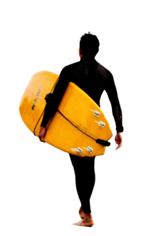

롱보드
미니 말
숏보드
피쉬보드
피쉬보드
는 돌고래와 서핑하는 것과 같다.
- 켈리 슬레이터 -
피쉬보드를 키워드로 나타내면
하모니, 리듬, 혁신 입니다.
돌고래와 함께 즐겨봐요.
그럼 시작해 볼까요?
피쉬보드의 Nose는 숏보드처럼
날카롭지만 그에 비해 훨씬
넓어
요.
숏보드란?
피쉬보드의 가장 큰 특징인 Tail은 이름 그대로
물고기의 꼬리
와 닮았다고 해서 붙여진 이름입니다.
피쉬보드의 Nose는 숏보드처럼
날카롭지만 그에 비해 훨씬
넓어
요.

5피트
피쉬보드는 대략
5피트
정도이며
길이와 넓이, 두께 모두 서퍼의 기호에 따라 변합니다.
길이는 숏보드 보다 짧지만
넓이, 두께는 그 보다 더
넓고 두껍
습니다.
숏보드란?
그럼
테이크 오프
가 편하겠군요.
그렇습니다!
그렇기에 최근 가장 많은 서퍼들이 사용하는 보드 중 하나입니다.
볼륨이 많은 만큼
낮은 파도에서 최적의 효과를 냅니다.
최근엔 여러 모양의 Tail을 사용하며
하이브리드라는 이름으로도 불립니다.
당신만의 돌고래를 만나세요
보드와 함께 하모니를